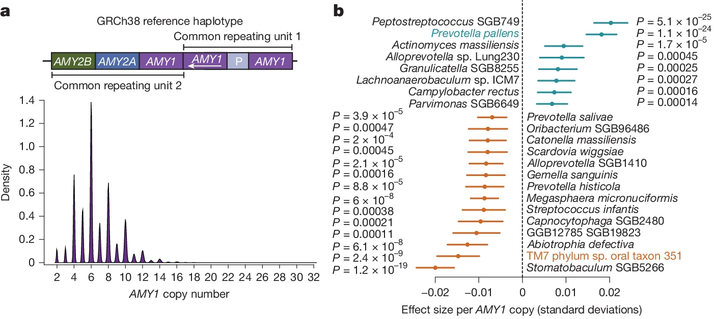
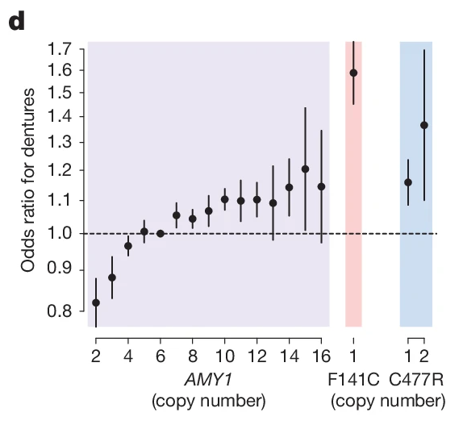
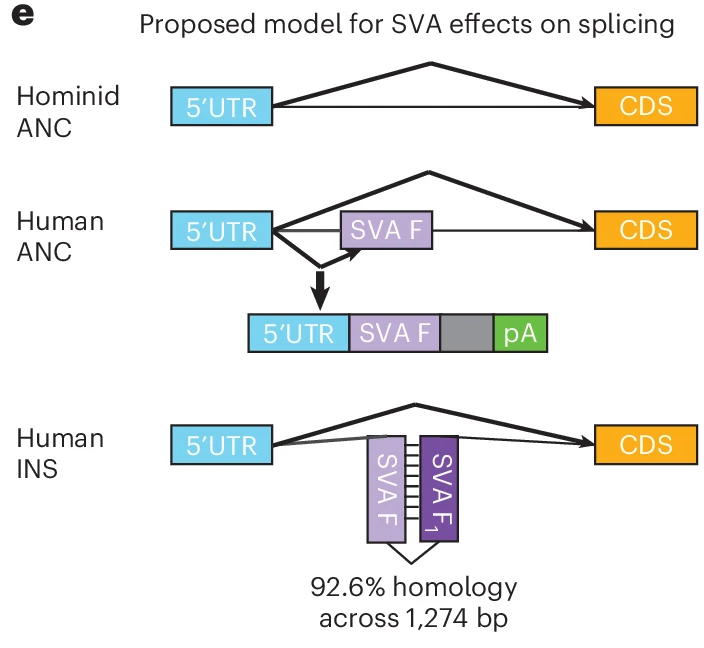
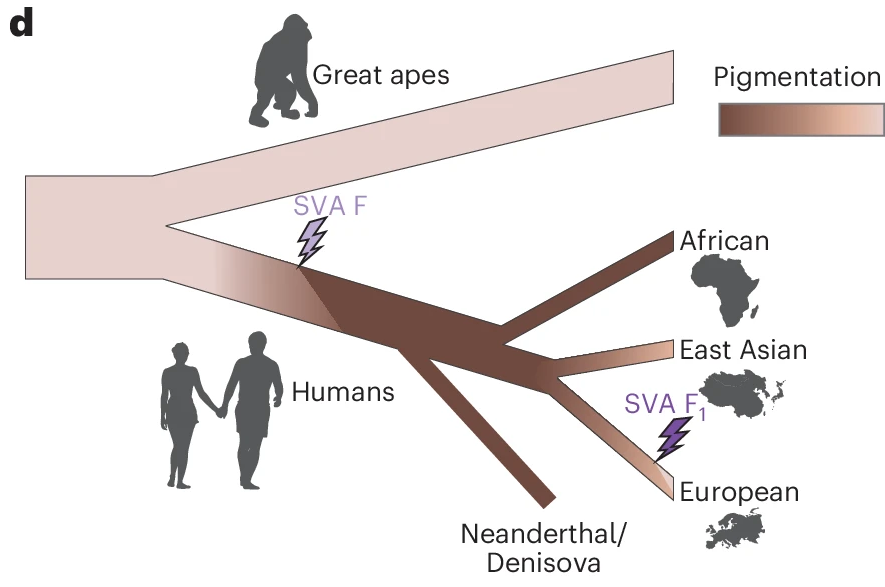
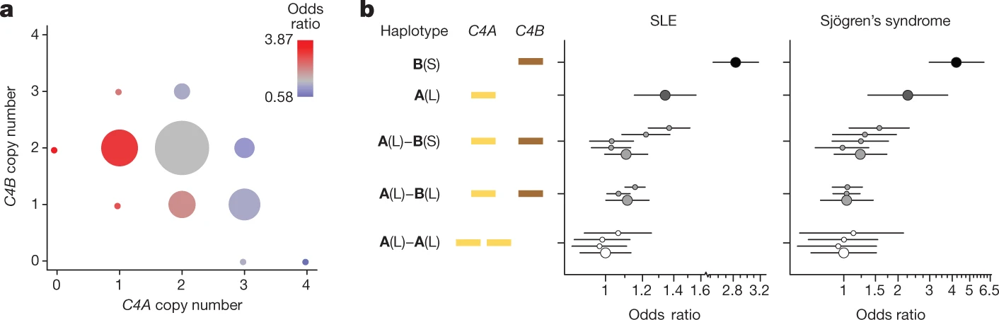
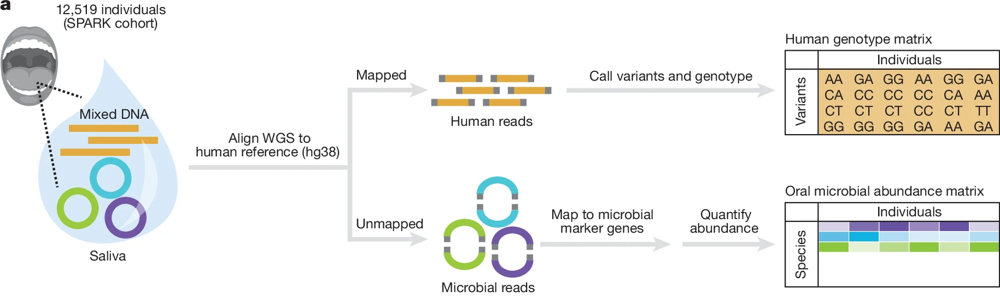
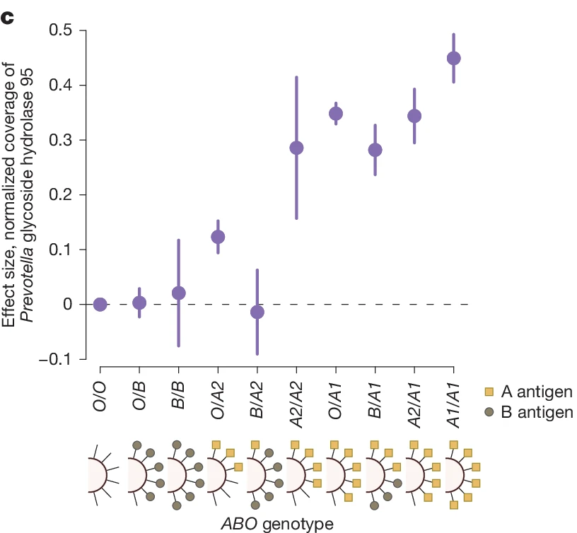
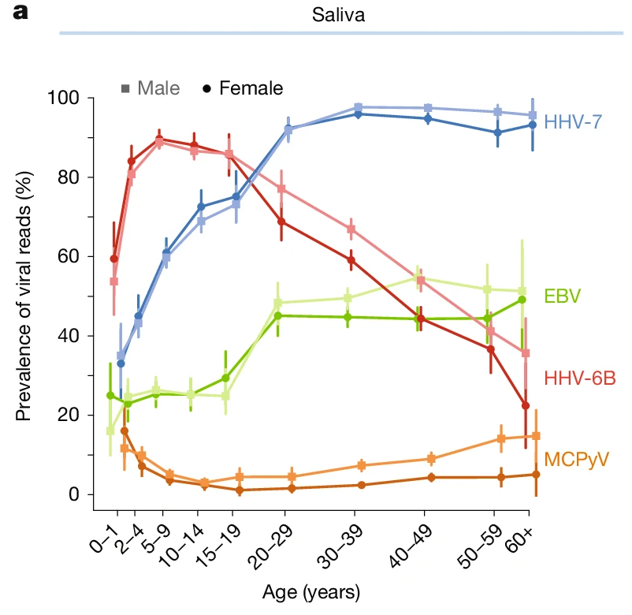
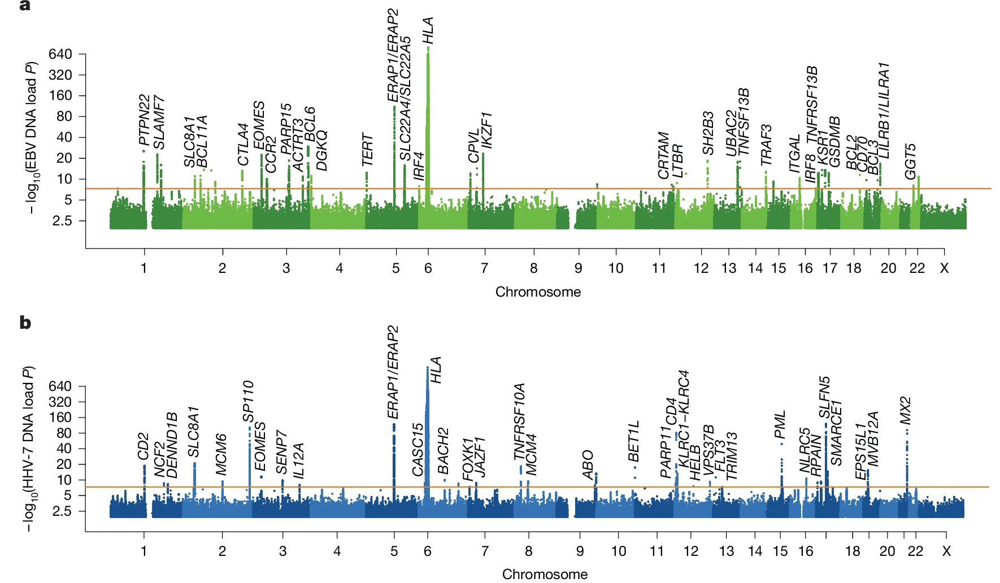
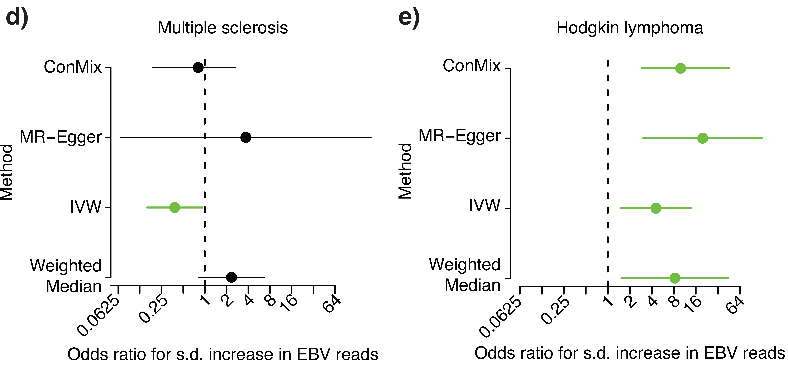

Structural variation tends to be an understudied source of genetic variation due to difficulty in genotyping and occasional multiallelic nature. But the affected sequence can span functional elements or entire genes, leading to interpretable mechanisms of how polymorphism leads to an associated phenotype.


Higher copy number of the gene encoding salivary amylase (AMY1) associates with higher risk of dentures and lower risk of bleeding gums, with two missense paralogous sequence variants (F141C and C477R) in some copies associating with greater magnitude. This effect is likely mediated by the effect of salivary amylase on members of the oral microbiome (see below).


A polymorphic SVA retrotransposon insertion in an intron of the gene encoding ASIP leads to increased expression by reverting a splice defect introduced by an earlier SVA insertion in the same intron. This sequence of insertions has led to an initial increase of pigmentation in all humans, followed by a decrease in a subset of European ancestry individuals.
Kamitaki et al. A Sequence of SVA Retrotransposon Insertions in ASIP Shaped Human Pigmentation. Nature Genetics (2024)
News & Views in Nature Genetics, Write-up on GWAS Stories

Higher copy numbers of the genes encoding both isoforms of complement component 4 (C4A and C4B) lead to decreased risk of autoimmune disorders such as systemic lupus erythematosus (SLE) and Sjogren's syndrome, with C4A having a stronger protective effect than C4B. In contrast, increased C4A (but not C4B) copy number leads to increased risk of schizophrenia, with both autoimmune and psychiatric associations being stronger in men.
Kamitaki et al. Complement Genes Contribute Sex-Biased Vulnerability in Diverse Disorders. Nature (2020)
Article by Harvard Medical School, Research Highlight in Nature Reviews Rheumatology, Article by MedicalResearch.com
Sekar et al. Schizophrenia Risk from Complex Variation of Complement Component 4. Nature (2016)
Metagenomic sequencing (sometimes unintentional) allows for the identification of host genetic variants that affect the abundance of different symbionts as well as selection for certain alleles in the latter. Generally I think of this as the host (ex. human) is a fixed environment from the standpoint of symbionts, where we can measure differences in response to environmental conditions (ie. across people) by genotyping hosts.

Around 10% of all reads in saliva-derived whole genome sequencing are from genomes of species that compose our oral microbiome. These can be used to characterize the abundance of different species present in each person's mouth, where samples from the SFARI SPARK cohort (n=12,519) found 11 loci that significantly associated with microbiome composition.

Additionally, reads mapping to bacterial genomes can be used to identify genes that are variably present in response to human alleles, such as a Prevotella-encoded glycoside hydrolase that is selected for by the amount of type A-antigen (encoded by ABO variation) in secretors (encoded by FUT2 loss-of-function)
Kamitaki et al. Human and Bacterial Genetic Variation Shape Oral Microbiomes and Health. Nature (2026)
Article by Broad Institute, Article by ConSalud.es

In comparison to the large number of saliva-derived reads that map to the oral microbiome, a small number of reads in blood and saliva map to common, chronic human viruses such as herpesviruses. Observation of a read indicates the person likely has a higher viral load than someone without any viral reads, with viral load varying with age, sex, time of day, and behavior.

Viral load can be treated as a quantitative phenotype, allowing for the identification of numerous human loci that associate with the abundance of a given virus.

These loci can then be used as instrument variables in Mendelian randomization to evaluate causality of viral load on observationally associated phenotypes. For example, we show that EBV load appears to have no effect on multiple sclerosis risk, but a strong effect on Hodgkin's lymphoma risk. As these are two diseases for which prior EBV infection is a risk factor, this suggests multiple sclerosis is more a consequence of immune response once infected, whereas EBV load poses a continual risk for developing Hodgkin's lymphoma.
Kamitaki et al. The DNA virome varies with human genes and environments. Nature (2026)
Article by Broad Institute, Research Briefing in Nature